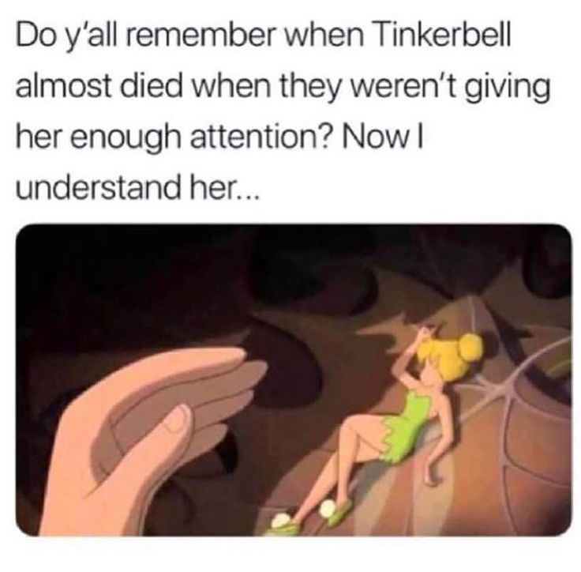

Home
Tinkerbell

Description
Are fairies as tasty as fairy tails make them look? This project was
supposed to be about a recipe, but I decided to make a meme!
Ingredients
- Tinkerbell
- A plate
- Soup
- Salsa valentina
Steps
- First, we take our plate and put the soup on it
- We proceed to ignore Tinkerbell until she loses her strength
- We take her (not from the wings!) and put her into the soup
- Take your salsa valentina and put as much as you like
- Enjoy! Follow my github for more recipes: fercodes